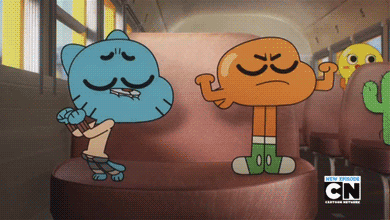
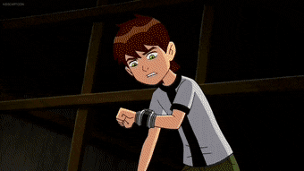

HOBBIES
Gaming
Since i was a kid, when I first introduced with technology like smartphone and laptop, I have took liking of a gaming community. I always watched gameplay of certain games that have been streaming by people on youtube. When I was sixth grader, I started to play a bunch games that whenever I have free time to spare. The games that I usually play that keeps me entertained are League of Legends: Wild Rift, Minecraft, and Coromon.
Watching Anime and Television Program
Televison is my one cure for my sickness of boredom. Grewing up before smartphones were born, I always rushed from school to watch cartoons on my T.V. During that time, Ben 10, and The Amazing World of Gumball, was my top 2 favorite cartoons that I have repeatedly watched it. Television also the one introduced me world of anime. Anime show that I always go into was My Hero Academia.
 |
 |  |
| My Hero Academia | The Amazing World of Gumball | Ben 10 |